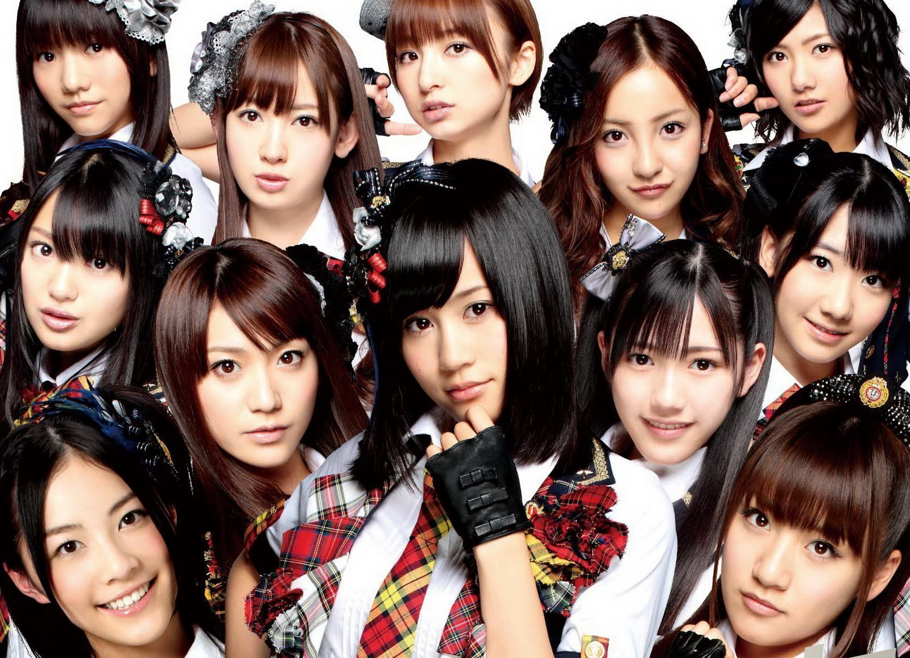
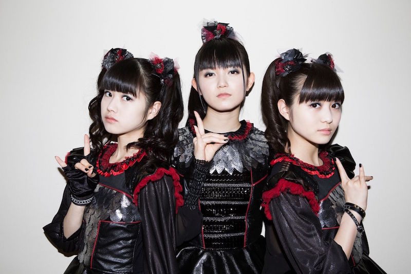

AKB48
AKB48 je japonská idolová skupina pojmenovaná po čtvrti Akihabara v Tokiu. Skupina má unikátní koncept "divadelních idolů", vystupuje téměř denně ve svém vlastním divadle v Akihabaře.
Založená v roce 2005, AKB48 je jednou z nejvýdělečnějších hudebních skupin v Japonsku a dala vzniknout mnoha sesterským skupinám po celé Asii.
Stahuj mp3 v zip souboru z úložiště na www.mega.nz
Seznam skladeb:
Aitakatta.mp3
Beginner.mp3
Heavy Rotation.mp3
Majisuka Rock n' Roll.mp3
Ponytail to Shushu.mp3
RIVER.mp3
Sakura no Hanabiratachi 2008.mp3
Sakura no Ki ni Narou.mp3
Sakura no shiori.mp3
Sakurairo no Sora no Shitade.mp3
Sayonara Crawl.mp3
Seishun to Kizukanai mama.mp3
UZA.mp3
Yasai Sisters.mp3
Yoyaku shita Christmas.mp3
Yuuhi wo Miteiru ka.mp3
BABYMETAL
BABYMETAL je japonská metalová idolová skupina, která kombinuje prvky J-popu a heavy metalu. Skupina byla zformována v roce 2010 jako pobočka idolové skupiny Sakura Gakuin.
Původní sestavu tvořily Su-metal (vůdkyně), Moametal a Yuimetal (Yuimetal skupinu opustila v roce 2018, v roce 2023 ji nahradila Momometal). BABYMETAL je známá svými energickými vystoupeními a unikátním fusion žánrem.
Mezi jejich nejznámější písně patří "Gimme Chocolate!!", "Karate" a "PA PA YA!!".
Stahuj mp3 v zip souboru z úložiště na www.mega.nz
Seznam skladeb:
4 no Uta.mp3
Akumu no Rinbukyoku.mp3
Babymetal Death.mp3
Benitsuki -Akatsuki-.mp3
Catch Me If You Can.mp3
Distortion.mp3
Do.Ki.Do.Ki*MORNING.mp3
Gimme Chocolate!!.mp3
Headbangeeeeerrrrr!!!!!.mp3
Ii ne!.mp3
Ijime, Dame, Zettai.mp3
KARATE.mp3
Line!.mp3
Megitsune.mp3
Onedari Daisakusen.mp3
PA PA YA!!.mp3
RATATATA.mp3
Road of Resistance.mp3
Song 4.mp3
THE ONE.mp3
U.ki.U.ki*Midnight.mp3
Dreamcatcher
Dreamcatcher je jihokorejská dívčí skupina pod společností Happy Face Entertainment. Skupina kombinuje rockové/metalové prvky s K-popem, čímž vytváří unikátní zvuk v tomto žánru.
Původně debutovaly jako MINX v roce 2014, v roce 2017 se přejmenovaly na Dreamcatcher s temnějším, více filmovým konceptem.
Stahuj mp3 v zip souboru z úložiště na www.mega.nz
Seznam skladeb:
BEcause.mp3
Black Or White.mp3
BOCA.mp3
Break The Wall.mp3
Chase Me.mp3
Deja Vu.mp3
Diamond.mp3
Faded.mp3
Fairytale.mp3
Good night.mp3
Jazz Bar.mp3
July 7th.mp3
JUSTICE.mp3
Maison.mp3
Odd Eye.mp3
PIRI.mp3
Red Sun.mp3
Sahara.mp3
Scream.mp3
Starlight.mp3
Vision.mp3
Wake up.mp3
Wind Blows.mp3
Wonderland.mp3
You and I.mp3
LiSA (japonsky: リサ)
LiSA (vlastním jménem Risa Oribe, narozená 24. června 1987) je japonská zpěvačka a skladatelka z města Seki v prefektuře Gifu.
Proslavila se především díky písním pro anime seriály jako Sword Art Online a Demon Slayer: Kimetsu no Yaiba. Její umělecké jméno znamená "Love is Same All" (Láska je všude stejná).
LiSA je známá svým silným hlasem a energickými vystoupeními, mezi její hity patří "Gurenge", "Crossing Field" a "Homura".
Stahuj mp3 v zip souboru z úložiště na www.mega.nz
Seznam skladeb:
Lisa - ADAMAS.mp3
Lisa - Catch the Moment.mp3
Lisa - Crossing Field.mp3
Lisa - Datte Atashino Hero.mp3
Lisa - Gurenge.mp3
Lisa - Homura.mp3
Lisa - Leopardess.mp3
Lisa - Lost Romance.mp3
Lisa - My Friends Forever.mp3
Lisa - No More Time Machine.mp3
Lisa - Oath Sign.mp3
K-pop
K-pop je hudební žánr, který vznikl v Jižní Koreji. Absorboval do sebe elementy taneční hudby, popu, elektropopu, hip hopu a současného r'n'b. Jedny z nejznámějších K popových skupin jsou Blackpink, BTS, Stray Kids, Tomorrow X Together, Twice, Seventeen nebo ENHYPEN.
Stahuj mp3 v zip souboru z úložiště na www.mega.nz
Seznam skladeb:
AESPA - Black Mamba.mp3
AESPA - Next Level.mp3
AESPA - Savage.mp3
BLACKPINK - AS IF ITS YOUR LAST.mp3
BLACKPINK - BOOMBAYAH.mp3
BLACKPINK - Dont Know What To Do.mp3
BLACKPINK - DUDUDU.mp3
BLACKPINK - How You Like That.mp3
BLACKPINK - Kill This Love.mp3
BLACKPINK - Pink Venom.mp3
BLACKPINK - PLAYING WITH FIRE.mp3
BLACKPINK - WHISTLE.mp3
T-ara - Day By Day.mp3
T-ara - No.9.mp3
T-ara - Roly-Poly.mp3
Two Steps From Hell
Two Steps From Hell je americká produkční společnost založená Thomasem Bergersenem a Nickem Phoenixem, specializující se na hudbu pro filmové trailery.
Jsou známí svými epickými, filmovými kompozicemi, jejichž hudba byla použita v nespočtu filmových trailerů, televizních spotů a videoher.
Stahuj mp3 v zip souboru z úložiště na www.mega.nz
Seznam skladeb:
01. Heart of Courage.mp3
02. Protectors of the Earth.mp3
03. Blackheart.mp3
04. To Glory.mp3
05. Archangel.mp3
06. Dragon Rider.mp3
07. Victory.mp3
08. Strength of a Thousand Men.mp3
09. Winterspell.mp3
10. For the Win.mp3
11. Fall of the Fountain World.mp3
12. El Dorado.mp3
13. Freedom Fighters.mp3
14. Impossible.mp3
15. Norwegian Pirate.mp3
16. Star Sky.mp3
17. Never Back Down.mp3
18. Flight of the Silverbird.mp3
19. Never Give up on Your Dreams.mp3
20. Empire of Angels.mp3
21. After the Fall.mp3
22. Cannon In D Minor.mp3
23. Vanquish (feat. Felicia).mp3
24. Enchantress.mp3
25. His Brightest Star Was You.mp3
26. The Ring of Winter.mp3
27. Unbreakable.mp3
28. One Above All.mp3
29. Infinite legends.mp3
30. Hercules.mp3
31. Dragonborn.mp3
32. Away With Your Fairies.mp3
Hudba z doram a filmů
Stahuj mp3 v zip souboru z úložiště na www.mega.nz
Seznam skladeb:
Castaway Diva - Someday.mp3
Cinderella and the Four Knights 1.mp3
Cinderella and the Four Knights 2.mp3
Goblin - Round and Round.mp3
Goblin - Stay With Me.mp3
Kekkon Dekinai Otoko.mp3
Kick Ass - Flying Home Extended.mp3
Mahoro Ekimae Bangaichi.mp3
Red Dog - The Search.mp3
Sunshine - John Murphy.mp3